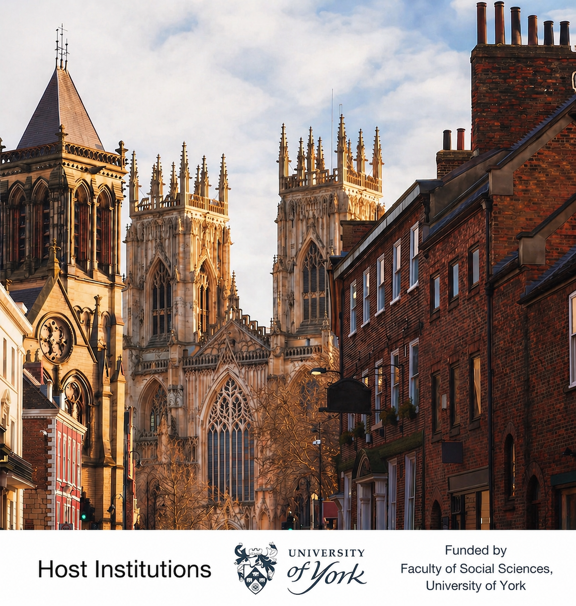
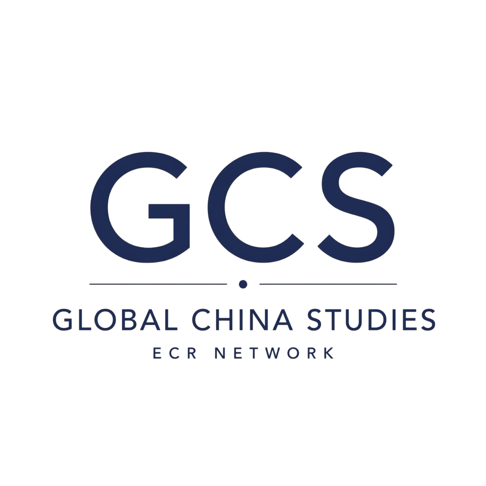
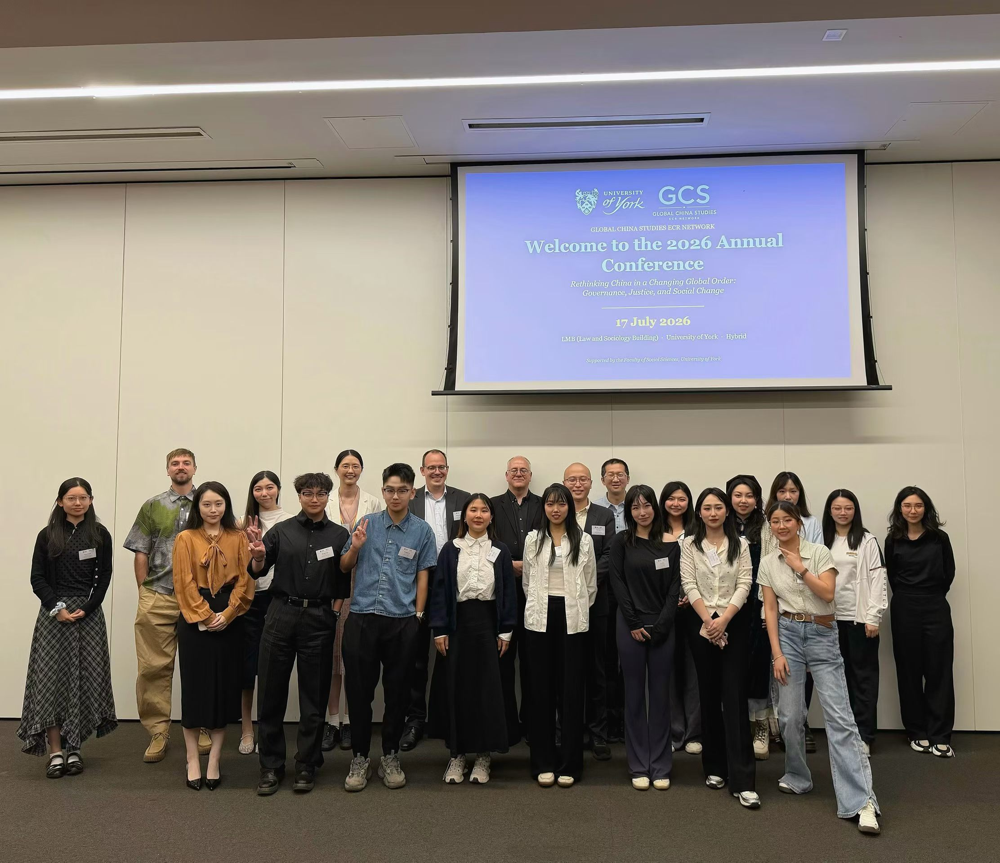

GCS webinar #005

Global China Studies
Early Career Researcher Network
Connect, collaborate, and grow in global China studies.
About the Network
Global China Studies Early Career Network is a community for early career reseachers and PhD students engaging with China-related research across the social sciences and humanities. Our goal is to create an open forum for intellectual exchange, academic networking, and cross-disciplinary collaboration. Our network welcomes researchers from politics, economics, public policy, sociology, history and related disciplines.
We are based in England, and we welcome scholars from all institutions aroud the world to join our network. Our network is a non-profit, public-interest initiative, and all events are free.

Join the Early Career Researcher Network
Join our mailing list to connect with a diverse group of scholars in Chinese studies worldwide, explore new ideas, and discover potential opportunities for collaboration. We share details of our monthly webinars and annual conference, as well as updates on members’ publications and research projects.
If you are interested in presenting, please contact gcs.ecr.network@gmail.com or any of the organisers. If you would like to attend a webinar, please join our mailing list, through which we will share the Zoom link.
Contact the NetworkMonthly Webinars
We welcome all scholars, including PhD students, to present their research at our monthly webinars. Our inclusive and diverse community offers constructive feedback and opportunities to connect with scholars of China studies.
GCS webinar #004
Climate Governance under Chinese Leadership? Complementarity and Divergence Between China-led Initiatives and UN Institutions
GCS webinar #003
Social Resources Transfer Program under China’s Targeted Poverty Alleviation Strategy
GCS webinar #002
Political culture in East Asia and research agenda
GCS webinar #001
The Role of Foreign Investment in China’s Rural Industrialisation during the Reform and Opening-Up period

Featured Articles by GCS Members
15 June 2026
UNDERSTANDING THE RELATIONSHIP BETWEEN EXTERNAL STATES AND REBELS: A TYPOLOGY
Existing studies of external state–rebel relationships often rely on broad and ambiguous notions such as support, sponsorship, or influence, which obscure important variation in the nature and dynamics of these interactions. This article develops a conceptual typology arguing that such relationships, where they occur, are best understood as either cooperative or conflictual.
The typology identifies four categories: alliance, partnership, coercion, and confrontation, and applies the framework to the relationship between China and the Myanmar National Democratic Alliance Army.
Read the published article8 June 2026
An intense geoeconomic rivalry; US-China Technonationalism and the dynamics of Escalation
With no dust settling on escalatory rounds of tariffs and rare-earth export controls, the increasingly conflictual US-China technonationalist rivalry is a central challenge of our times. This feature essay compares various perspectives in making sense of the rivalry, refusing the twin temptations of liberal (over)optimism and neo-realist fatalism.
Rather than treating interdependence as a structural moderator or hegemonic transition as an inevitable trap, the essay illustrates how the rivalry persists and perpetuates as interdependence itself becomes weaponised.
Read More
Drawing on Bratton’s (2016) notion of the Stack, a multi-layered organization of digital capitalism, the essay illustrates the rivalry operates across layers, from undersea cables and semiconductor supply chains to cloud infrastructures and rare-earth mineral politics. Confrontations, across layers, are already underway, diffused and cumulative.
The emerging literature on state-platform capitalism (Rolf and Schindler, 2023) further illuminates how profit accumulation and security imperatives have been structurally fused, embedding strategic confrontations within the rivalry’s functioning and trajectory. Renewed statist re-marketisation across the global South has produced novel forms of poly-aligned agency, as peripheral states are also actively rescaling their political economies to extract leverage from the rivalry while absorbing its pressures.
The essay ultimately frames the impasse as structurally unstable coexistence, whose trajectory is shaped by the contested political projects of transnational class coalitions navigating a fragmented yet deeply integrated global order.
Annual Conference

Our first Annual Conference was successfully held on 17 July 2026.
Thank you to everyone who joined us at the University of York. We look forward to welcoming you again next year.
Download the 2026 Conference Programme programme 2026.pdf DownloadOur Team
PhD in Politics, University of York
Leading Organizer
Tonghua Li
Tonghua’s research focuses on the political economy of trade in the context of U.S.–China relations, with a particular interest in the politics of narratives and discourse.
Our Goals
Connect
Join our mailing list to receive updates on research developments, new publications, calls for papers, and upcoming webinars and conferences.
Discuss
We organize monthly webinars with scholars and PhD students to discuss new insights.
Present
Our annual conference brings us together each year to present research, gain feedback, and advance new ideas.